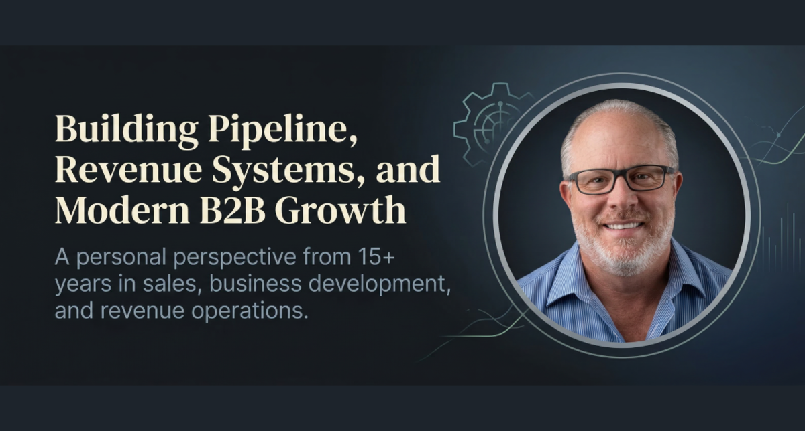

<!doctype html>
<html lang="en">
<head>
  <meta charset="UTF-8" />
  <meta name="viewport" content="width=device-width, initial-scale=1" />
  <title>Tony Beal | Revenue Operations Leader | AI Sales Pipeline Systems</title>
  <meta name="description" content="Tony Beal is a revenue operations leader specializing in AI-powered pipeline generation, sales automation, and business development systems for B2B companies." />
  <meta name="keywords" content="Tony Beal, Revenue Operations, RevOps, AI Sales Systems, Pipeline Generation, Sales Operations, Lead Generation, Business Development, B2B Revenue Growth, Sales Automation, Manufacturing Sales" />
  <link rel="canonical" href="https://tonybeal.net/" />
  <meta property="og:title" content="Tony Beal | Revenue Operations Leader | AI Sales Pipeline Systems" />
  <meta property="og:description" content="Tony Beal builds AI-powered revenue systems that turn cold markets into predictable pipeline." />
  <meta property="og:type" content="website" />
  <meta property="og:url" content="https://tonybeal.net/" />
  <meta property="og:image" content="https://tonybeal.net/assets/linkedin-article-cover.png" />
  <meta name="twitter:card" content="summary_large_image" />
  <script type="application/ld+json">{"@context":"https://schema.org","@type":"Person","name":"Tony Beal","url":"https://tonybeal.net","jobTitle":"Revenue Operations Leader","description":"Revenue Operations and AI Sales Systems professional with 15+ years B2B experience","sameAs":["https://www.linkedin.com/in/tony-beal40/"]}<\/script>
  <link rel="preconnect" href="https://fonts.googleapis.com" />
  <link rel="preconnect" href="https://fonts.gstatic.com" crossorigin />
  <link href="https://fonts.googleapis.com/css2?family=Inter:wght@300;400;500;600;700;800;900&display=swap" rel="stylesheet" />
  <link rel="stylesheet" href="style.css?v=20260314-v8" />
</head>
<body>
<nav class="p-nav" id="p-nav">
  <div class="p-nav-inner">
    <a class="p-nav-brand" href="/">Tony Beal</a>
    <div class="p-nav-links">
      <a href="#systems">Systems</a><a href="#stack">Tech Stack</a><a href="resume.html">Resumes</a>
      <a href="mailto:tonybeal40@gmail.com?subject=Interview%20Request" class="p-btn p-btn-sm p-btn-primary">Book a Call</a>
    </div>
  </div>
</nav>

<!-- HERO -->
<section class="p-hero" id="top">
  <div class="p-hero-bg-grid" aria-hidden="true"></div>
  <div class="p-container p-hero-grid">
    <div class="p-hero-text">
      <p class="p-overline">Revenue Operations &middot; AI Pipeline Systems &middot; Business Development</p>
      <h1 class="p-hero-name">Tony<br/><em>Beal</em></h1>
      <p class="p-hero-tagline">Revenue Operations Leader</p>
      <p class="p-hero-sub">I build AI-powered revenue systems that turn cold markets into predictable pipeline using RevOps strategy, automation, and targeted outbound sales.</p>
      <div class="p-btn-row">
        <a class="p-btn p-btn-primary" href="resume.html">Download Resume</a>
        <a class="p-btn p-btn-outline" href="https://www.linkedin.com/in/tony-beal40/" target="_blank" rel="noopener">Connect on LinkedIn</a>
        <a class="p-btn p-btn-ghost" href="mailto:tonybeal40@gmail.com?subject=Interview%20Request%20-%20Tony%20Beal">Email Tony</a>
      </div>
      <div class="p-social-links">
        <a href="https://www.linkedin.com/in/tony-beal40/" target="_blank" rel="noopener">LinkedIn Profile</a>
        <a href="https://www.linkedin.com/services/page/195844335b985238a0/" target="_blank" rel="noopener">LinkedIn Services</a>
        <a href="https://www.linkedin.com/newsletters/7297852613121712128/" target="_blank" rel="noopener">Newsletter</a>
      </div>
    </div>
    <div class="p-hero-right">
      <div class="p-hero-photo-frame">
        
      </div>
      <div class="p-hero-metrics">
        <div class="p-metric-card"><strong class="count" data-target="15" data-suffix="+">15+</strong><span>Years B2B Sales</span></div>
        <div class="p-metric-card"><strong class="count" data-prefix="$" data-target="6" data-suffix="M+">$6M+</strong><span>Pipeline Generated</span></div>
        <div class="p-metric-card"><strong class="count" data-target="3700" data-suffix="+">3,700+</strong><span>Target Accounts</span></div>
        <div class="p-metric-card"><strong class="count" data-target="1000" data-suffix="+">1,000+</strong><span>Customers Acquired</span></div>
      </div>
      <p class="p-hero-location">Greater St. Louis | Open to Remote / Hybrid</p>
    </div>
  </div>
  <div class="p-scroll-hint" aria-hidden="true"><span></span>Scroll</div>
</section>

<!-- PROBLEM -->
<section class="p-section p-section-gray reveal" id="problem">
  <div class="p-container">
    <p class="p-section-label">The problem I solve</p>
    <h2 class="p-section-title">Why Many B2B Sales Teams Struggle With Pipeline</h2>
    <p class="p-section-lead">Modern B2B organizations rely on manual prospecting, disconnected CRM systems, and inconsistent targeting strategies. Without strong revenue operations systems, pipeline generation becomes unpredictable and difficult to scale.</p>
    <div class="p-problem-grid">
      <div class="p-problem-item"><div class="p-problem-icon">01</div><h3>Unclear ICP Definition</h3><p>Sales teams cannot hit targets they have not defined. No ideal customer profile means spray-and-pray outreach with low conversion rates.</p></div>
      <div class="p-problem-item"><div class="p-problem-icon">02</div><h3>Manual Outbound Prospecting</h3><p>Reps spending hours on manual research instead of selling. No automation means inconsistent pipeline volume and team burnout.</p></div>
      <div class="p-problem-item"><div class="p-problem-icon">03</div><h3>Limited Pipeline Visibility</h3><p>No dashboards. No reporting. No idea where deals are stalling or which accounts are trending toward close. Leadership flies blind.</p></div>
      <div class="p-problem-item"><div class="p-problem-icon">04</div><h3>AI Used Without Strategy</h3><p>Tools deployed without process design. AI without RevOps discipline creates noise, not pipeline. Strategy must precede technology.</p></div>
    </div>
    <p class="p-problem-close">Companies need revenue systems that combine sales discipline, AI automation, and data intelligence to generate predictable pipeline.</p>
  </div>
</section>

<!-- MEET TONY -->
<section class="p-section reveal" id="about">
  <div class="p-container p-about-grid">
    <div class="p-about-photo">
      <div class="p-about-photo-frame"></div>
      <div class="p-about-badges">
        <span>Revenue Operations</span><span>AI Sales Systems</span><span>Pipeline Generation</span>
        <span>Lead Generation</span><span>Manufacturing Sales</span><span>Industrial Markets</span>
      </div>
    </div>
    <div class="p-about-text">
      <p class="p-section-label">The guide</p>
      <h2 class="p-section-title">Meet Tony Beal</h2>
      <p class="p-about-para">Tony Beal is a revenue operations and business development professional with more than 15 years of experience helping B2B companies across manufacturing, industrial equipment, pharma, nutraceuticals, and food and beverage markets build scalable pipeline generation systems.</p>
      <p class="p-about-para">Tony specializes in combining traditional sales strategy with modern tools including AI automation, revenue dashboards, and account intelligence to create predictable revenue growth. His technical background in Python, PowerShell, and Vite sets him apart from traditional sales leaders.</p>
      <blockquote class="p-about-quote">"Sales success is not just about effort. It is about systems. Companies that build strong revenue operations infrastructure outperform those that rely on individual effort alone."</blockquote>
      <div class="p-about-approach">
        <h3>How I Approach Revenue Systems</h3>
        <div class="p-approach-steps">
          <div class="p-step"><span>01</span><p>Identify the target market and define the ideal customer profile</p></div>
          <div class="p-step"><span>02</span><p>Build account discovery and lead intelligence systems using AI and enrichment tools</p></div>
          <div class="p-step"><span>03</span><p>Implement AI-assisted outreach workflows and pipeline tracking dashboards</p></div>
        </div>
      </div>
    </div>
  </div>
</section>

<!-- PORTFOLIO -->
<section class="p-section p-section-gray reveal" id="portfolio">
  <div class="p-container">
    <p class="p-section-label">Proof of work</p>
    <h2 class="p-section-title">Revenue Systems Portfolio</h2>
    <p class="p-section-sub">Real systems built to generate real pipeline. Not theory &mdash; execution.</p>
    <div class="p-portfolio-grid">
      <div class="p-portfolio-card">
        <div class="p-portfolio-chart"><svg viewBox="0 0 200 65" fill="none" xmlns="http://www.w3.org/2000/svg"><path d="M0,62 30,48 60,36 90,24 130,14 170,7 200,3 V65 H0 Z" fill="rgba(37,99,235,.12)"/><polyline points="0,62 30,48 60,36 90,24 130,14 170,7 200,3" stroke="#2563EB" stroke-width="2.5" fill="none" stroke-linecap="round"/><circle cx="200" cy="3" r="4" fill="#2563EB"/></svg></div>
        <div class="p-portfolio-num">01</div>
        <h3>AI Lead Generation Engine</h3>
        <p>AI-assisted prospect discovery system identifying high-value accounts and automating research workflows. Built using LinkedIn Sales Navigator and Apollo.io enrichment to generate qualified pipeline at scale.</p>
        <div class="p-portfolio-tags"><span>Python</span><span>Apollo.io</span><span>LinkedIn Navigator</span><span>AI Automation</span></div>
      </div>
      <div class="p-portfolio-card">
        <div class="p-portfolio-chart"><svg viewBox="0 0 200 65" fill="none" xmlns="http://www.w3.org/2000/svg"><rect x="8" y="46" width="22" height="16" fill="#6366F1" opacity="0.6" rx="2"/><rect x="38" y="34" width="22" height="28" fill="#6366F1" opacity="0.72" rx="2"/><rect x="68" y="24" width="22" height="38" fill="#2563EB" opacity="0.75" rx="2"/><rect x="98" y="14" width="22" height="48" fill="#2563EB" opacity="0.85" rx="2"/><rect x="128" y="6" width="22" height="56" fill="#2563EB" opacity="0.9" rx="2"/><rect x="158" y="1" width="22" height="61" fill="#2563EB" rx="2"/></svg></div>
        <div class="p-portfolio-num">02</div>
        <h3>Customer Intelligence Dashboard</h3>
        <p>Custom data dashboard tracking target accounts, engagement signals, pipeline activity, and deal velocity. Built with Python backend and Vite frontend. Gives leadership real-time visibility into account health and conversion probability.</p>
        <div class="p-portfolio-tags"><span>Python</span><span>Vite</span><span>CRM Integration</span><span>Analytics</span></div>
      </div>
      <div class="p-portfolio-card">
        <div class="p-portfolio-chart"><svg viewBox="0 0 200 65" fill="none" xmlns="http://www.w3.org/2000/svg"><rect x="4" y="49" width="28" height="10" fill="#e2e8f0" rx="2"/><rect x="4" y="49" width="26" height="10" fill="#2563EB" rx="2"/><rect x="4" y="34" width="28" height="10" fill="#e2e8f0" rx="2"/><rect x="4" y="34" width="20" height="10" fill="#6366F1" rx="2"/><rect x="4" y="19" width="28" height="10" fill="#e2e8f0" rx="2"/><rect x="4" y="19" width="14" height="10" fill="#2563EB" rx="2"/><rect x="4" y="4" width="28" height="10" fill="#e2e8f0" rx="2"/><rect x="4" y="4" width="8" height="10" fill="#6366F1" rx="2"/><text x="36" y="57" font-size="8" fill="#64748b">Closed</text><text x="36" y="42" font-size="8" fill="#64748b">Qualified</text><text x="36" y="27" font-size="8" fill="#64748b">Engaged</text><text x="36" y="12" font-size="8" fill="#64748b">Prospects</text></svg></div>
        <div class="p-portfolio-num">03</div>
        <h3>Pipeline Visibility System</h3>
        <p>Real-time sales analytics platform providing leadership insight into pipeline health, revenue forecasting, and stage-by-stage conversion. Eliminates the black box in sales operations with CRM-connected dashboards.</p>
        <div class="p-portfolio-tags"><span>Dashboard</span><span>RevOps</span><span>Forecasting</span><span>CRM Backend</span></div>
      </div>
      <div class="p-portfolio-card">
        <div class="p-portfolio-chart"><svg viewBox="0 0 200 65" fill="none" xmlns="http://www.w3.org/2000/svg"><circle cx="22" cy="32" r="11" fill="#2563EB" opacity="0.9"/><circle cx="80" cy="18" r="9" fill="#6366F1" opacity="0.8"/><circle cx="80" cy="46" r="9" fill="#6366F1" opacity="0.8"/><circle cx="148" cy="12" r="7" fill="#2563EB" opacity="0.7"/><circle cx="148" cy="32" r="7" fill="#2563EB" opacity="0.8"/><circle cx="148" cy="52" r="7" fill="#2563EB" opacity="0.7"/><line x1="33" y1="28" x2="71" y2="21" stroke="#2563EB" stroke-width="1.5" stroke-dasharray="4 3" opacity="0.5"/><line x1="33" y1="36" x2="71" y2="43" stroke="#6366F1" stroke-width="1.5" stroke-dasharray="4 3" opacity="0.5"/><line x1="89" y1="17" x2="141" y2="14" stroke="#2563EB" stroke-width="1.5" stroke-dasharray="4 3" opacity="0.5"/><line x1="89" y1="44" x2="141" y2="34" stroke="#6366F1" stroke-width="1.5" stroke-dasharray="4 3" opacity="0.5"/></svg></div>
        <div class="p-portfolio-num">04</div>
        <h3>Outbound Targeting Framework</h3>
        <p>Account-based targeting system using LinkedIn Sales Navigator and Apollo.io enrichment to map ideal customers across manufacturing, industrial equipment, pharma, and food and beverage verticals. 3,700+ accounts targeted.</p>
        <div class="p-portfolio-tags"><span>LinkedIn Navigator</span><span>Apollo.io</span><span>ABM</span><span>Territory Mapping</span></div>
      </div>
    </div>
  </div>
</section>

<!-- SYSTEMS I BUILD -->
<section class="p-section reveal" id="systems">
  <div class="p-container">
    <p class="p-section-label">Capabilities</p>
    <h2 class="p-section-title">Revenue Systems and Capabilities</h2>
    <p class="p-section-sub">I design and implement revenue systems that combine AI, automation, and targeted outreach to generate qualified pipeline for B2B companies.</p>
    <div class="p-sys-grid">
      <div class="p-sys-col"><div class="p-sys-icon-num">AI</div><h3>AI Revenue Systems</h3><ul><li>AI-assisted research and prospecting</li><li>Prompt engineering (40,000+ prompts)</li><li>AI messaging generation</li><li>Automated outreach workflows</li><li>AI content and reporting pipelines</li></ul></div>
      <div class="p-sys-col"><div class="p-sys-icon-num">OPS</div><h3>Revenue Operations</h3><ul><li>CRM pipeline architecture</li><li>Sales process mapping</li><li>Territory account mapping</li><li>Revenue reporting dashboards</li><li>Lead qualification frameworks</li></ul></div>
      <div class="p-sys-col"><div class="p-sys-icon-num">GTM</div><h3>Lead Generation</h3><ul><li>LinkedIn Sales Navigator targeting</li><li>Apollo.io lead enrichment</li><li>Account discovery frameworks</li><li>Cold market mapping</li><li>Outbound messaging systems</li></ul></div>
      <div class="p-sys-col"><div class="p-sys-icon-num">DEV</div><h3>Technical Development</h3><ul><li>Python scripting and automation</li><li>PowerShell scripting</li><li>Visual Studio Code</li><li>Vite application framework</li><li>GitHub version control</li></ul></div>
    </div>
    <div class="p-why-hire">
      <h3>Why Companies Hire Me</h3>
      <div class="p-why-grid">
        <div class="p-why-item"><span class="p-check">&#10003;</span><p>I build pipeline quickly using systems over individual effort</p></div>
        <div class="p-why-item"><span class="p-check">&#10003;</span><p>I understand manufacturing and industrial sales deeply</p></div>
        <div class="p-why-item"><span class="p-check">&#10003;</span><p>I implement AI without breaking sales teams or processes</p></div>
        <div class="p-why-item"><span class="p-check">&#10003;</span><p>I bring RevOps discipline to business development strategy</p></div>
        <div class="p-why-item"><span class="p-check">&#10003;</span><p>I execute systems, not just advise on strategy</p></div>
        <div class="p-why-item"><span class="p-check">&#10003;</span><p>I combine Sales plus RevOps plus AI - a rare combination</p></div>
      </div>
    </div>
  </div>
</section>

<!-- TECH STACK -->
<section class="p-section p-section-gray reveal" id="stack">
  <div class="p-container">
    <p class="p-section-label">Tools I work with daily</p>
    <h2 class="p-section-title">Technology Stack</h2>
    <p class="p-section-sub">Python, PowerShell, Visual Studio Code, Vite, LinkedIn Sales Navigator, CRM platforms, and AI automation tools are part of my daily workflow.</p>
    <div class="p-stack-groups">
      <div class="p-stack-group"><h3>Development</h3><div class="p-stack-items"><div class="p-stack-item"><div class="p-stack-badge">PY</div><span>Python</span></div><div class="p-stack-item"><div class="p-stack-badge">PS</div><span>PowerShell</span></div><div class="p-stack-item"><div class="p-stack-badge">VS</div><span>VS Code</span></div><div class="p-stack-item"><div class="p-stack-badge">VT</div><span>Vite</span></div><div class="p-stack-item"><div class="p-stack-badge">GH</div><span>GitHub</span></div></div></div>
      <div class="p-stack-group"><h3>AI and Automation</h3><div class="p-stack-items"><div class="p-stack-item"><div class="p-stack-badge">PE</div><span>Prompt Eng.</span></div><div class="p-stack-item"><div class="p-stack-badge">AI</div><span>AI Workflows</span></div><div class="p-stack-item"><div class="p-stack-badge">AR</div><span>AI Research</span></div><div class="p-stack-item"><div class="p-stack-badge">AC</div><span>AI Content</span></div><div class="p-stack-item"><div class="p-stack-badge">AT</div><span>Automation</span></div></div></div>
      <div class="p-stack-group"><h3>Sales Platforms</h3><div class="p-stack-items"><div class="p-stack-item"><div class="p-stack-badge">LN</div><span>LinkedIn Nav.</span></div><div class="p-stack-item"><div class="p-stack-badge">AP</div><span>Apollo.io</span></div><div class="p-stack-item"><div class="p-stack-badge">CR</div><span>CRM Platforms</span></div><div class="p-stack-item"><div class="p-stack-badge">OT</div><span>Outreach Tools</span></div><div class="p-stack-item"><div class="p-stack-badge">LI</div><span>Lead Intel</span></div></div></div>
      <div class="p-stack-group"><h3>Analytics</h3><div class="p-stack-items"><div class="p-stack-item"><div class="p-stack-badge">DB</div><span>Dashboards</span></div><div class="p-stack-item"><div class="p-stack-badge">PA</div><span>Pipeline Analytics</span></div><div class="p-stack-item"><div class="p-stack-badge">CI</div><span>Customer Intel</span></div><div class="p-stack-item"><div class="p-stack-badge">SR</div><span>Sales Reports</span></div><div class="p-stack-item"><div class="p-stack-badge">DV</div><span>Data Viz</span></div></div></div>
    </div>
  </div>
</section>

<!-- REVENUE INTELLIGENCE -->
<section class="p-section reveal" id="intelligence">
  <div class="p-container">
    <p class="p-section-label">Data systems</p>
    <h2 class="p-section-title">Revenue Intelligence</h2>
    <p class="p-section-sub">I build dashboards that create pipeline visibility, turning raw CRM data into leadership-grade insights and forecasts.</p>
    <div class="p-dash-grid">
      <div class="p-dash-panel">
        <div class="p-dash-header"><span class="p-dash-dot green"></span><span class="p-dash-dot yellow"></span><span class="p-dash-dot red"></span><span class="p-dash-title">Pipeline Health</span></div>
        <div class="p-dash-body">
          <div class="p-dash-stat-row"><div class="p-dash-stat"><strong>$6.2M</strong><span>Total Pipeline</span></div><div class="p-dash-stat"><strong>47%</strong><span>Conversion Rate</span></div><div class="p-dash-stat"><strong>$84K</strong><span>Avg Deal</span></div></div>
          <svg viewBox="0 0 280 72" fill="none" xmlns="http://www.w3.org/2000/svg" style="width:100%;margin-top:10px"><line x1="0" y1="65" x2="280" y2="65" stroke="#e2e8f0" stroke-width="1"/><line x1="0" y1="44" x2="280" y2="44" stroke="#e2e8f0" stroke-width="1"/><line x1="0" y1="23" x2="280" y2="23" stroke="#e2e8f0" stroke-width="1"/><path d="M0,63 40,55 80,46 120,35 160,26 200,18 240,10 280,5 V65 H0 Z" fill="rgba(37,99,235,.12)"/><polyline points="0,63 40,55 80,46 120,35 160,26 200,18 240,10 280,5" stroke="#2563EB" stroke-width="2.5" fill="none" stroke-linecap="round"/><circle cx="280" cy="5" r="3.5" fill="#2563EB"/></svg>
          <div class="p-chart-labels"><span>Jan</span><span>Mar</span><span>May</span><span>Jul</span><span>Sep</span><span>Nov</span></div>
        </div>
      </div>
      <div class="p-dash-panel">
        <div class="p-dash-header"><span class="p-dash-dot green"></span><span class="p-dash-dot yellow"></span><span class="p-dash-dot red"></span><span class="p-dash-title">Lead Generation</span></div>
        <div class="p-dash-body">
          <div class="p-dash-stat-row"><div class="p-dash-stat"><strong>3,750+</strong><span>Accounts</span></div><div class="p-dash-stat"><strong>22%</strong><span>Engagement</span></div><div class="p-dash-stat"><strong>8.4%</strong><span>Meeting Rate</span></div></div>
          <svg viewBox="0 0 280 72" fill="none" xmlns="http://www.w3.org/2000/svg" style="width:100%;margin-top:10px"><line x1="0" y1="65" x2="280" y2="65" stroke="#e2e8f0" stroke-width="1"/><rect x="10" y="50" width="28" height="15" fill="#6366F1" opacity="0.6" rx="2"/><rect x="52" y="40" width="28" height="25" fill="#6366F1" opacity="0.7" rx="2"/><rect x="94" y="30" width="28" height="35" fill="#2563EB" opacity="0.75" rx="2"/><rect x="136" y="20" width="28" height="45" fill="#2563EB" opacity="0.82" rx="2"/><rect x="178" y="10" width="28" height="55" fill="#2563EB" opacity="0.88" rx="2"/><rect x="220" y="3" width="28" height="62" fill="#2563EB" rx="2"/></svg>
          <div class="p-chart-labels"><span>Q1</span><span>Q2</span><span>Q3</span><span>Q4</span><span>Q5</span><span>Q6</span></div>
        </div>
      </div>
      <div class="p-dash-panel">
        <div class="p-dash-header"><span class="p-dash-dot green"></span><span class="p-dash-dot yellow"></span><span class="p-dash-dot red"></span><span class="p-dash-title">Sales Performance</span></div>
        <div class="p-dash-body">
          <div class="p-dash-stat-row"><div class="p-dash-stat"><strong>1,000+</strong><span>Won</span></div><div class="p-dash-stat"><strong>91%</strong><span>Quota</span></div><div class="p-dash-stat"><strong>36d</strong><span>Cycle</span></div></div>
          <div class="p-dash-funnel" style="margin-top:14px"><div class="p-funnel-row" style="width:100%"><span>Prospects</span><span>3,750</span></div><div class="p-funnel-row" style="width:78%"><span>Engaged</span><span>2,925</span></div><div class="p-funnel-row" style="width:52%"><span>Qualified</span><span>1,950</span></div><div class="p-funnel-row" style="width:28%"><span>Closed Won</span><span>1,000+</span></div></div>
        </div>
      </div>
    </div>
  </div>
</section>

<!-- INDUSTRY VISIBILITY -->
<section class="p-section p-section-dark reveal" id="visibility">
  <div class="p-container">
    <p class="p-section-label p-label-light">Social proof</p>
    <h2 class="p-section-title p-title-light">Industry Visibility</h2>
    <p class="p-section-sub p-sub-light">Tony regularly publishes insights on revenue operations, AI in sales, and pipeline development. Building influence while building pipeline.</p>
    <div class="p-vis-grid">
      <div class="p-vis-stat"><strong class="count" data-target="10000" data-suffix="+">10,000+</strong><span>LinkedIn Followers</span><em>+109.4% YoY</em></div>
      <div class="p-vis-stat"><strong>281K+</strong><span>Annual Impressions</span><em>54,832 reached</em></div>
      <div class="p-vis-stat"><strong class="count" data-target="22899" data-suffix="+">22,899+</strong><span>Article Views</span><em>+219.2% YoY</em></div>
      <div class="p-vis-stat"><strong class="count" data-target="1478" data-suffix="+">1,478+</strong><span>Newsletter Subs</span><em>The Results Pipeline</em></div>
    </div>
    <div class="p-li-feature">
      <figure class="p-li-cover">
        
        <figcaption><span>Featured Article: Building Pipeline, Revenue Systems, and Modern B2B Growth</span><a href="https://www.linkedin.com/in/tony-beal40/" target="_blank" rel="noopener">Read on LinkedIn</a></figcaption>
      </figure>
    </div>
    <div class="p-li-btns">
      <a class="p-btn p-btn-outline-white" href="https://www.linkedin.com/in/tony-beal40/" target="_blank" rel="noopener">LinkedIn Profile</a>
      <a class="p-btn p-btn-outline-white" href="https://www.linkedin.com/services/page/195844335b985238a0/" target="_blank" rel="noopener">LinkedIn Services</a>
      <a class="p-btn p-btn-outline-white" href="https://www.linkedin.com/newsletters/7297852613121712128/" target="_blank" rel="noopener">The Results Pipeline Newsletter</a>
    </div>
  </div>
</section>

<!-- BOOKS -->
<section class="p-section reveal" id="books">
  <div class="p-container">
    <p class="p-section-label">Learning mindset</p>
    <h2 class="p-section-title">Books That Shape My Thinking</h2>
    <p class="p-section-sub">Continuous learning is part of the operating system. These books form the foundation of how Tony approaches sales, systems, and leadership.</p>
    <div class="p-books-grid">
      <div class="p-book"><div class="p-book-cover bc1"><span>Atomic Habits</span></div><p>James Clear</p></div>
      <div class="p-book"><div class="p-book-cover bc2"><span>The Challenger Sale</span></div><p>Dixon and Adamson</p></div>
      <div class="p-book"><div class="p-book-cover bc3"><span>Good to Great</span></div><p>Jim Collins</p></div>
      <div class="p-book"><div class="p-book-cover bc4"><span>Extreme Ownership</span></div><p>Willink and Babin</p></div>
      <div class="p-book"><div class="p-book-cover bc5"><span>Blue Ocean Strategy</span></div><p>Kim and Mauborgne</p></div>
      <div class="p-book"><div class="p-book-cover bc6"><span>Never Split the Difference</span></div><p>Chris Voss</p></div>
      <div class="p-book"><div class="p-book-cover bc7"><span>Hard Thing About Hard Things</span></div><p>Ben Horowitz</p></div>
      <div class="p-book"><div class="p-book-cover bc8"><span>Zero to One</span></div><p>Peter Thiel</p></div>
    </div>
  </div>
</section>

<!-- OPPORTUNITIES -->
<section class="p-section p-section-gray reveal" id="opportunities">
  <div class="p-container">
    <p class="p-section-label">Currently open to</p>
    <h2 class="p-section-title">Opportunities</h2>
    <p class="p-section-sub">Actively pursuing revenue operations and business development leadership roles where I can build systems that generate predictable pipeline for B2B companies.</p>
    <div class="p-opp-grid">
      <a class="p-opp-row" href="resume-revops.html"><span class="p-opp-num">01</span><span class="p-opp-name">Director of Revenue Operations</span><span class="p-opp-tag">RevOps</span><span class="p-opp-arr">&#8594;</span></a>
      <a class="p-opp-row" href="resume-business-development.html"><span class="p-opp-num">02</span><span class="p-opp-name">Director of Business Development</span><span class="p-opp-tag">Business Dev</span><span class="p-opp-arr">&#8594;</span></a>
      <a class="p-opp-row" href="resume-sales-operations.html"><span class="p-opp-num">03</span><span class="p-opp-name">Sales Operations Leadership</span><span class="p-opp-tag">Sales Ops</span><span class="p-opp-arr">&#8594;</span></a>
      <a class="p-opp-row" href="resume-business-development.html"><span class="p-opp-num">04</span><span class="p-opp-name">RevOps Strategy and AI Sales Systems</span><span class="p-opp-tag">AI + RevOps</span><span class="p-opp-arr">&#8594;</span></a>
    </div>
    <div class="p-opp-meta">
      <div class="p-opp-meta-item"><strong>Location:</strong> Greater St. Louis</div>
      <div class="p-opp-meta-item"><strong>Open to:</strong> Remote</div>
      <div class="p-opp-meta-item"><strong>Open to:</strong> Hybrid</div>
      <div class="p-opp-meta-item"><strong>Also:</strong> Willing to Relocate</div>
    </div>
    <div class="p-command-grid">
      <a class="p-card" href="resume.html"><div class="p-card-icon-txt">RES</div><h3>Resume Hub</h3><p>Role-specific resumes for RevOps, Sales Ops, and Business Development opportunities.</p><span class="p-card-cta">Open Resume Hub &#8594;</span></a>
      <a class="p-card" href="cover-letters.html"><div class="p-card-icon-txt">CVR</div><h3>Cover Letter Kit</h3><p>Templates tuned for enterprise industrial, SaaS GTM, and strategic account growth roles.</p><span class="p-card-cta">Build Cover Letters &#8594;</span></a>
      <a class="p-card" href="job-targets.html"><div class="p-card-icon-txt">TGT</div><h3>Active Job Targets</h3><p>Prioritized company list with careers links to keep applications moving fast.</p><span class="p-card-cta">View Target Companies &#8594;</span></a>
    </div>
  </div>
</section>

<!-- FINAL CTA -->
<section class="p-section p-section-dark reveal" id="contact">
  <div class="p-container p-cta-inner">
    <div class="p-cta-text">
      <p class="p-section-label p-label-light">Let's connect</p>
      <h2 class="p-cta-title">Ready for<br/><em>Your Next Hire?</em></h2>
      <p class="p-cta-sub">If your organization is looking for stronger pipeline generation, revenue operations leadership, or AI-enabled sales infrastructure, Tony Beal would welcome the opportunity to connect.</p>
      <p class="p-cta-open">Currently open to: <strong>RevOps leadership &middot; Business development &middot; Sales operations transformation</strong></p>
    </div>
    <div class="p-cta-actions">
      <a class="p-btn p-btn-primary p-btn-lg" href="resume.html">Download Resume</a>
      <a class="p-btn p-btn-outline-white" href="https://www.linkedin.com/in/tony-beal40/" target="_blank" rel="noopener">LinkedIn Profile</a>
      <a class="p-btn p-btn-outline-white" href="mailto:tonybeal40@gmail.com?subject=Interview%20Request%20-%20Tony%20Beal">Email Tony</a>
      <p class="p-cta-email"><a href="mailto:tonybeal40@gmail.com">tonybeal40@gmail.com</a></p>
    </div>
  </div>
</section>

<footer class="p-footer">
  <div class="p-footer-inner">
    <div class="p-footer-brand"><strong>Tony Beal</strong><span>Revenue Operations | Business Development | AI Sales Systems | Pipeline Generation</span></div>
    <div class="p-footer-links"><a href="https://www.linkedin.com/in/tony-beal40/" target="_blank" rel="noopener">LinkedIn</a><a href="resume.html">Resume Hub</a><a href="mailto:tonybeal40@gmail.com">Email</a><a href="job-targets.html">Job Targets</a></div>
  </div>
  <div class="p-footer-bottom">
    <p>&#169; 2026 Tony Beal &middot; Greater St. Louis &middot; Built with Python, Vite, and AI-assisted workflows</p>
    <p class="p-footer-seo">Topics: Revenue Operations &middot; RevOps &middot; AI Sales Systems &middot; Pipeline Generation &middot; Sales Automation &middot; Business Development &middot; B2B Revenue Growth &middot; Lead Generation Systems &middot; Sales Operations</p>
  </div>
</footer>

<script>
const revealObs=new IntersectionObserver(entries=>{entries.forEach(e=>{if(e.isIntersecting){e.target.classList.add('in');revealObs.unobserve(e.target);}});},{threshold:.08});
document.querySelectorAll('.reveal').forEach(el=>revealObs.observe(el));
const counterObs=new IntersectionObserver(entries=>{entries.forEach(entry=>{if(!entry.isIntersecting)return;const el=entry.target,target=+el.dataset.target||0;const pre=el.dataset.prefix||'',suf=el.dataset.suffix||'';const start=performance.now();(function run(now){const x=Math.min((now-start)/1800,1),ease=1-Math.pow(1-x,4);el.textContent=pre+Math.floor(target*ease).toLocaleString()+suf;if(x<1)requestAnimationFrame(run);})(start);counterObs.unobserve(el);});},{threshold:.4});
document.querySelectorAll('.count').forEach(el=>counterObs.observe(el));
const phrases=['Revenue Operations Leader','AI Pipeline Systems Builder','B2B Revenue Strategist','Sales Operations Expert','Lead Generation Architect','RevOps Systems Builder'];
let pi=0;const tagEl=document.querySelector('.p-hero-tagline');
if(tagEl){setInterval(()=>{pi=(pi+1)%phrases.length;tagEl.style.cssText='opacity:0;transform:translateY(6px);transition:opacity .3s,transform .3s';setTimeout(()=>{tagEl.textContent=phrases[pi];tagEl.style.cssText='opacity:1;transform:none;transition:opacity .3s,transform .3s';},350);},3000);}
const sh=document.querySelector('.p-scroll-hint');
if(sh)window.addEventListener('scroll',()=>{if(window.scrollY>80)sh.style.opacity='0';},{passive:true});
const nav=document.getElementById('p-nav');
window.addEventListener('scroll',()=>nav&&nav.classList.toggle('p-nav-scrolled',window.scrollY>20),{passive:true});
</script>
</body>
</html>
